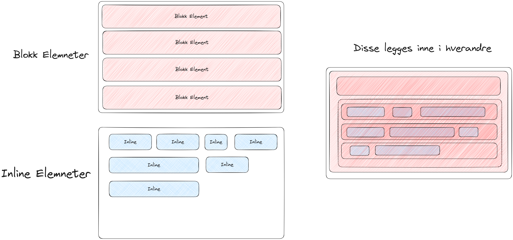
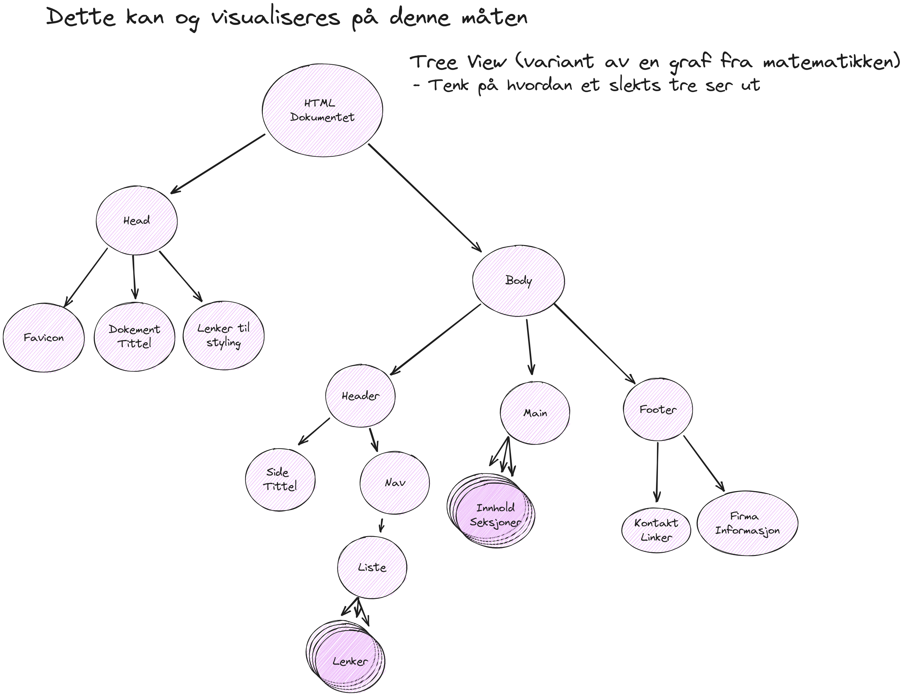

I dette elementet
Projects
- Project 1
- Project 2
- Project 3
Blokk og Inline Elementer
Det er to basis elementer som HTML bruker, Blokk elemnter og Inline elementer.
Disse er det som vil være grunnsteinene som du bruker for å konstruere nettsider og applikasjoner med.
3 Parts Nettside
Ett eksempel layout for en nettside er 3 parteren™. Veldig grei å bruke og noe du vil se igjen på brorparten av Nettsider du er innom. Untaket blir når du beveger deg mer mot en nett applikasjon.
De 3 bitene
- Header seksjonen, muligens du kjenner den igjen under navnet Navbar.
- Main seksjonen, her er det faktiske inneholdet du har på siden.
- Footer seksjonen, her legger en som regel kontakt informasjon, informasjon om bedriften, copyryight etc.
Visualisering av HTML
Ren HTML tekst kan være vanskelig å orientere seg i. En alternativ representasjon som er mer visuell er det som kalles et Tree.
Denne Visualisering er noe som dere kanskje kjenner igjen fra et slektstre. Bruk den tanken, for når vi skal inn i JavaScript og navigere programatisk så er det barn (children), foreldre (parents), søsken (siblings) og forfedre (ancestor) vi bruker for å referere til de andre elementene.
